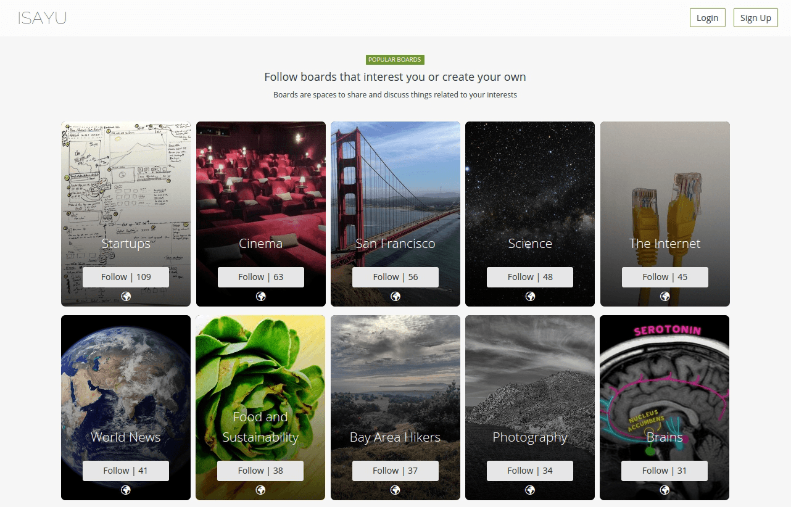
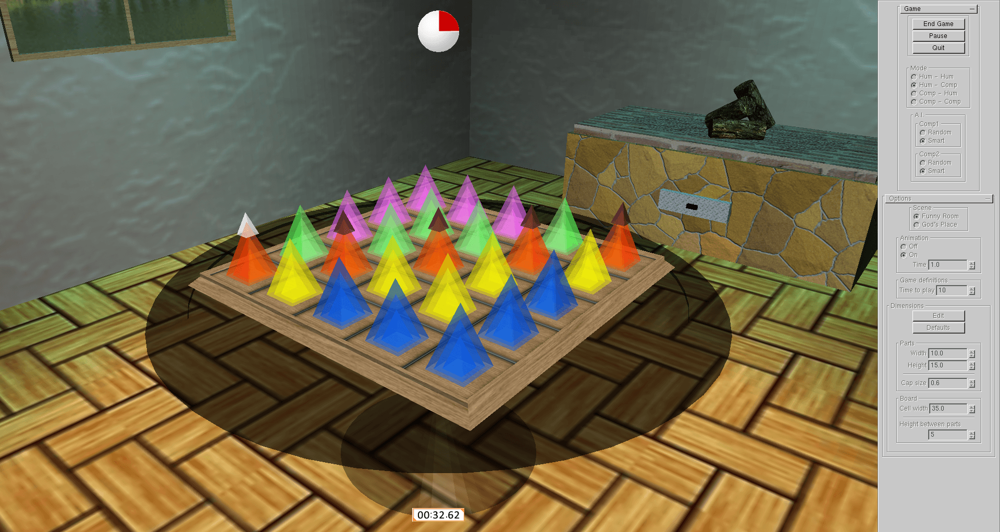

A web application for creating and publishing multi-platform mobile applications online. EasyEasyApps provides tools for creating and publish mobile apps for Android and iOS without programming knowledge. It also creates an HTML5 version of your app which can be accessed from any device.
A social network with curated content and split into interest groups so that you can truly choose what to read/write about, with minimum information noise. ISayU is a place for sharing and following your interests.
Human-Machine Interface for a Passenger Information System. The project's goal was to develop the interface for railway network operators as well as passengers.
Volcano is a 3d board game. It was developed using C++/OpenGL for graphics and Prolog for the AI. The game supports multiplayer mode and single player mode with three levels of dificulty using minimax.
A platform for integrated management of project and resources within a R&D department. It also integrates google docs and chat for easing communication and document sharing. Developed by five teams of 6 students each and reliying on php as the main language.